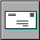
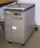

![[Powered by Apache]](image/apache_pb.gif)
Mirror at VAXarchive
This FAQ has not been updated recently, it does not mention the new sysinstall program which makes installing NetBSD a lot easier. You should first read the 1.4.2 installation manual and then come back here for all the additional information that is in this FAQ that the manual doesn't have, and also you will be able to recognize the parts of this FAQ that are out of date. It still has a lot of useful information!
1. Introduction
Getting more information about NetBSD and NetBSD/VAX:
The NetBSD mailing lists page Please join the port-vax list!
and hosted on

a MicroVAX II
running
NetBSD/vax.